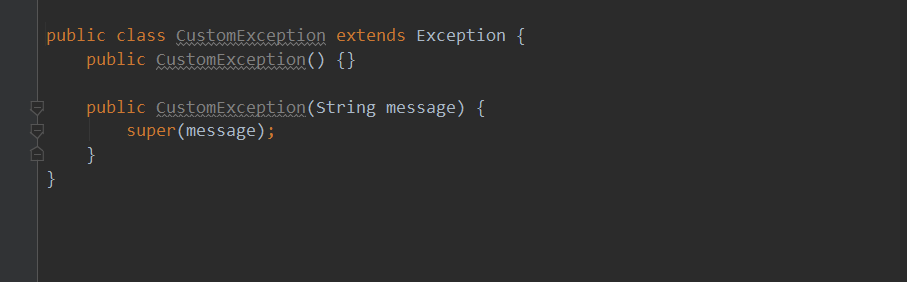
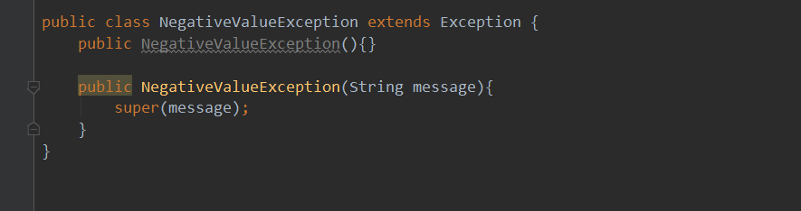
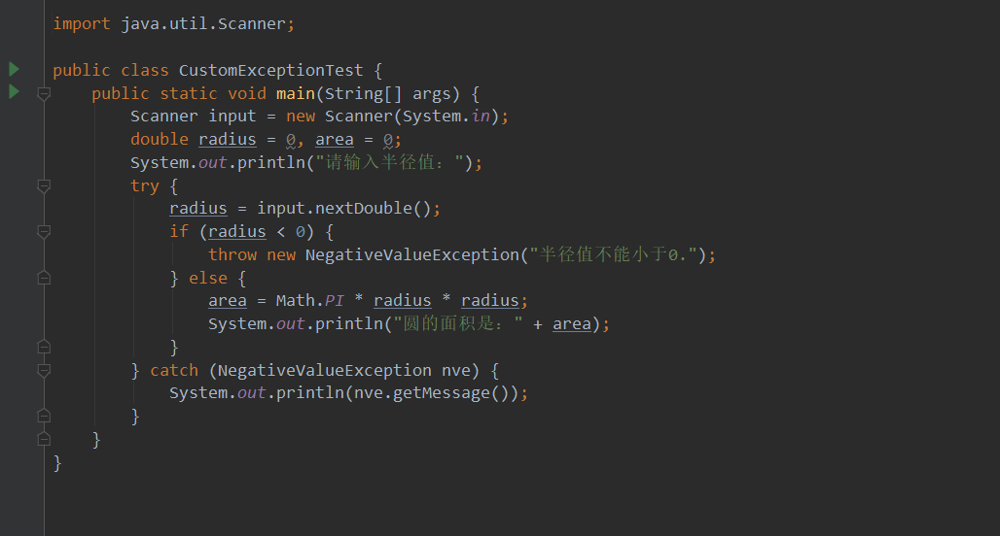
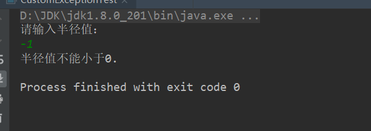

Java自定义异常类
尽管Java已经预定义了许多异常类，但有时还需要定义自己的异常。编写自定义异常类实际上是继承一个API标准异常类，用新定义的异常处理信息覆盖原有信息的过程。常用的编写自定义异常类的模式如下：

当然也可选用Throwable作为父类。其中无参数构造方法为创建缺省参数对象提供了方便。第二个构造方法将在创建这个异常对象时提供描述这个异常信息的字符串，通过调用超类构造方法向上传递给父类，对父类中的toString（）方法中返回的原有信息进行覆盖。
下面举个具体例子，假设程序中需要验证用户输入的数据值必须是正值。可以按照上面的模式编写自定义异常类如下：

有了上述自定义异常类，在程序中就能使用它。
假设编写程序要求用户输入圆半径，计算圆面积。该程序要求半径值应该为正值。程序代码如下：

运行程序，假设输入一个负值，程序会抛出 NegativeValueException异常。
